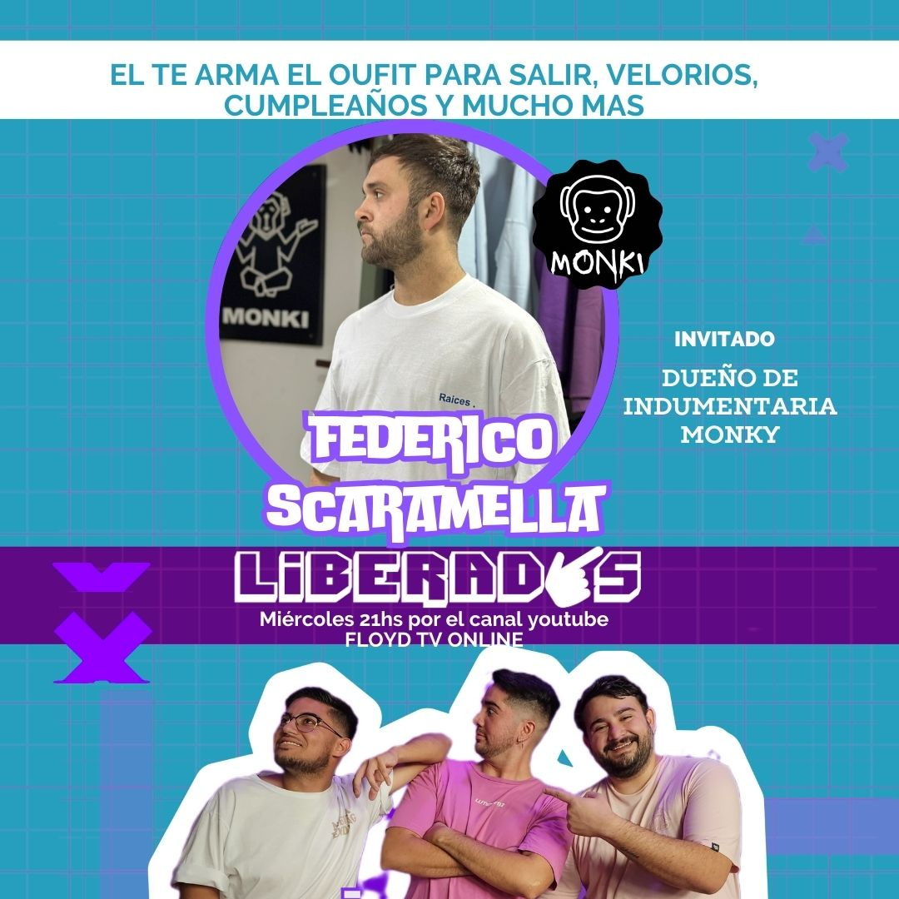

Bienvenidos a Liberados
Un espacio donde las charlas de amigos se mezclan con risas y reflexiones Tres amigos, cero filtros, muchas historias ¿Te unes a la conversación?
Todos los Miercoles a las 21hs
Reproducir Ultimo Programa
En nuestro último programa de streaming, tuvimos el placer de recibir a Juan Carlos, el famoso cantante de cuarteto. Durante la transmisión, charlamos sobre su carrera, sus influencias y los proyectos que tiene en mente. La mejor parte fue, sin duda, la actuación en vivo, donde nos regaló algunos de sus grandes éxitos. La conexión con nuestra audiencia fue increíble, y todos compartimos un momento lleno de energía y buena música. Sin duda, fue una experiencia inolvidable y esperamos repetirla pronto.
Programas Anteriores
